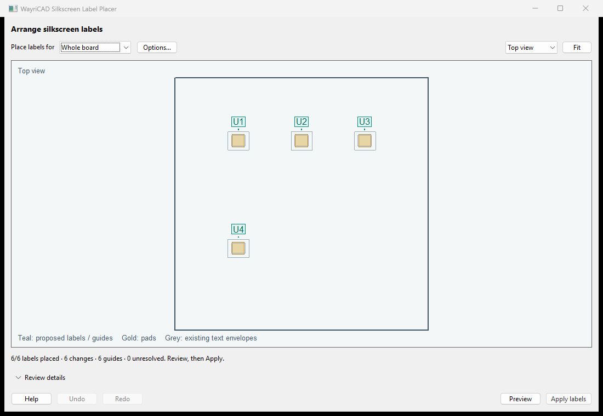

Select parts, Preview, inspect and Apply labels. Options stay out of the main workflow.

Options can include visible values or existing board text on silk and change minimum height, stroke, spacing, search distance and guide threshold. Hidden/locked text and locked parts stay untouched. Native board fabrication minimums take priority. Text contents and schematic associations are preserved.
Options → Size & direction enables automatic sizing from a preferred height down to your minimum, using the specified step. With automatic sizing off, larger existing text is preserved. Native fabrication floors always apply. Allow horizontal, vertical or both orientations; choose bottom/right (0°/90°), top/left (180°/270°) or either direction, viewed from the label side.
Options → Formatting offers editable Test points (TP*, knockout), Programming headers (SWD/JTAG/ISP/ICSP/PROG value patterns, bold) and Input connectors (INPUT/POWER_IN value patterns, italic) presets. Add a preset and check its pattern; connectors are not classified automatically. Enter references such as J1,J4, or wildcard patterns. Commas mean alternatives; filled reference/value/text criteria must all match. First matching rule wins. Each style can Keep existing, turn On or turn Off. Knockout's native filled envelope is collision checked. Unresolved labels keep their original styles.


Distant component labels use a checked guide path ending outside the body. A blocked guide rejects the candidate. Repeat placement manages only plugin-owned guides; ordinary artwork is preserved.
Dense search is automatic: clearance-scale positions, alternate horizontal/vertical orientations, larger labels first and spatially indexed collision checks. Native DRC on the 100-part fixture found zero violations after placement. Marble had no new violations, but 97 of 182 eligible references remained unresolved; crowded-board coverage is reported rather than assumed.

Local bounded search and conservative text/body envelopes can leave crowded labels unresolved. The dense search can try alternate orientations and a checked orthogonal guide bend. Blocked guide paths remain unresolved. The viewport's font and shapes are illustrative; actual native text envelopes are used by the planner. A changed board invalidates Preview and Undo. Closing the window discards its history; ordinary PCB Editor Undo is not claimed. KiCad 10 native runtime is required; other platforms and KiCad 11 need validation.